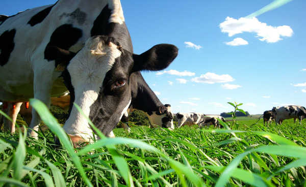

REDUZIR O CONSUMO DE CARNE BOVINA
Escrito Por: Victor Trajano
Seguindo a tendência de outros produtos alimentícios, a carne bovina, cada dia mais, está sendo comercializada em supermercados em substituição aos açougues. O consumidor prefere comprar em supermercados por vários motivos: preços convidativos, comodidade de encontrar todos os produtos que deseja, segurança, estacionamento etc.
Outro ponto interessante é a importância que os consumidores dão à qualidade da carne bovina. Segundo o mesmo estudo da APAS, a qualidade da carne é o terceiro fator de maior importância no momento de se escolher um supermercado.
Aqui no Brasil, até mesmo os supermercados que visam uma clientela de maior poder aquisitivo, geralmente ainda não conseguem manter uma disponibilidade constante de carne de qualidade uniforme. Entretanto, deve ser reconhecido que está havendo uma evolução e o tema qualidade de carne bovina tem sido amplamente abordado e discutido. Isso é muito bom, pois a carne bovina vem perdendo importância relativa na mesa do brasileiro. Apesar de o nosso consumo per capita ser um dos maiores do mundo, aqui também o consumo de carne de frango cresceu bastante e praticamente já igualou com o consumo de carne bovina.
Sua Produção
A produção de carne é responsável pela emissão de gases poluentes e acelera os efeitos do aquecimento global. Por isso, precisamos refletir sobre os limites dessa produção para a preservação de nossas florestas, o incentivo à agricultura familiar e a manutenção do clima global, não se trata de ser contra toda a produção agropecuária, e sim de pensar modelos de produção mais responsáveis, menos impactantes e mais transparentes com os consumidores.
Além disso, reduzir o consumo de carne é também uma questão de saúde. Uma pequena mudança em sua alimentação pode provocar uma grande transformação para as futuras gerações.
A mudança começa no consumo individual, porém, o papel mais importante cabe aos grandes produtores, em assumirem o compromisso com uma produção menos impactante ao meio ambiente e uma relação mais honesta e transparente com seus consumidores.
O mundo poderia alimentar sua crescente população sem causar danos irreparáveis ao meio ambiente se as pessoas consumissem menos carne, cortassem pela metade o desperdício de comida e adotassem melhores práticas agrícolas. Não implementar uma dessas ações pode intensificar as mudanças climáticas, aumentar a poluição e esgotar os recursos naturais. O alerta é de um estudo de uma equipe internacional de pesquisadores.
Segundo os cientistas, reduzir 90% do consumo de carnes em países ocidentais é necessário para conter o aquecimento global e evitar que o planeta entre em colapso. A produção de alimentos gera gases do efeito estufa na criação de gado, destrói florestas e usa quantidades insustentáveis de água. O estudo é o mais amplo já realizado sobre como hábitos alimentares afetam o meio ambiente.
Alimentação Baseada em Vegetais
O estudo ressalta que o uso excessivo de nitrogênio e fósforo no sistema de produção alimentar impulsiona mudanças climáticas, poluição e esgota a água doce. Diante disso, os autores analisaram o que chamaram de "dieta flexitária” podemos optar por uma variedade de dietas saudáveis, pois além de ajudar o meio ambiente isso também irá ocasionar a uma grande melhoria na qualidade de vida dos nossos habitantes, mas ainda sim devemos exigir que os produtores arquem com o compromisso de ter uma produção que cause menos poluição ao nosso meio ambiente, pois isso será bem mais benéfico ao consumidor.
Referências Bibliográficas:
ROCHA, Miguel da. O consumo de carne bovina pelos brasileiros. Beef Point. Disponível em: "https://www.beefpoint.com.br/o-consumo-de-carne-bovina-pelos-brasileiros-4049/"". Acesso em: 05 de abril de 2020.